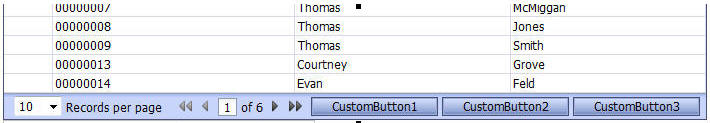
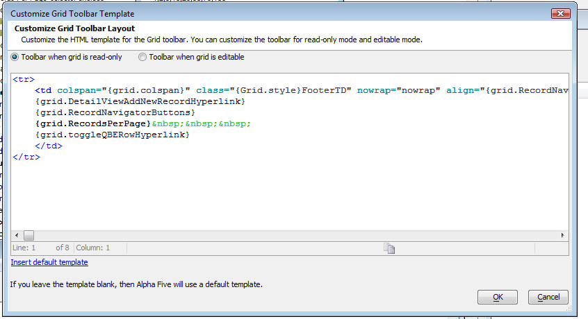

Customize the Grid Toolbar
The Grid has always allowed you to customize the layout of the record navigator, but now, you can customize the entire Grid Toolbar and you can add your own custom buttons to perform actions that you define.
For example, this image shows how we have added 3 custom buttons to the toolbar.

To customize the toolbar, click the smart field for the 'Customize Grid toolbar template' property.

The Genie lets you customize the toolbar for when the Grid is read-only and when it is editable. You can make modifications to the HTML template. The placeholders in curly brackets are used for the different parts of the toolbar.
To get started, click the hyperlink to insert the default template.

To add a button to the template you would have to do
foo() would be a javascript function defined in javascript function declarations.
However, this is a manual technique that is obsolete as of October 2010, because Action Buttons gives you this facility and much more.
See video 86
86